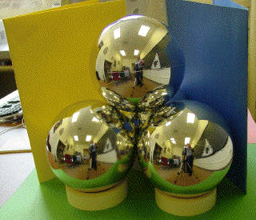
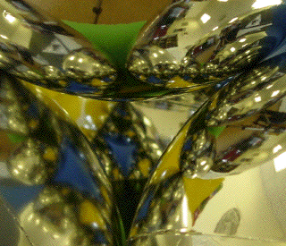

Now to differentiate between the different openings through which light enters the tetrahedron, stand different colored folders in front of two of the other openings, leaving the last opening clear to see inside the tetrahedron.
The right picture is a magnification of the view of the front of the tetrahedron.
|  |  |
Return to Procedure.